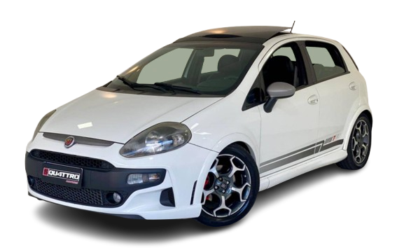

PUNTO T-JET
Com alma italiana e um turbilhão sob o capô, o Punto T-Jet foi o pequeno notável que entregou diversão e performance em um pacote que ainda hoje acelera os corações dos entusiastas.

HISTÓRIA
Foi lançado em um mercado sedento por carros esportivos acessíveis. Sua última reestilização em 2012 trouxe não apenas atualizações visuais, mas uma versão que se destacaria por seu caráter esportivo, o T-Jet. Nesse período, o mercado carecia de opções verdadeiramente esportivas, e o T-Jet veio para preencher essa lacuna.
O motor 1.4 litro do Fiat Punto T-Jet sempre foi seu grande destaque. Entregando 152 cavalos de potência e 21,1 kgfm de torque, o T-Jet proporcionava um desempenho emocionante. A aceleração de 0 a 100 km/h em 8,3 segundos e uma velocidade máxima de 203 km/h eram números impressionantes que refletiam a verdadeira essência esportiva deste veículo.
O Seletor DNA permitia escolher entre modos de direção que afetavam a resposta do acelerador, tornando a experiência de condução ainda mais personalizável.
A dirigibilidade do Fiat Punto T-Jet era firme e lembrava a de um carro esportivo, o que era uma raridade naquela época. A suspensão rígida realçava a dirigibilidade esportiva que os entusiastas tanto apreciavam. As curvas eram uma oportunidade para experimentar a sensação de controle e estabilidade que o T-Jet oferecia.
FICHA TECNICA
Modelo: Punto T-Jet
Ano: 2008–2014
Motor: 1.4 turbo gasolina
Potência: 152 cv
Torque: 21,1 kgfm
0–100 km/h: 8,3 s
Vel. Máx: 203 km/h
Peso: 1.270 kg
Tração: Dianteira
Câmbio: Manual 5 marchas
Dimensões (C×L×A): 3.990×1.687×1.490 mm
CURIOSIDADE
Ao contrário de muitos motores turbo mais modernos que já contam com injeção direta de combustível e comando de válvulas variável, o motor 1.4 16V T-Jet do Punto (e do Linea) usava a tecnologia multiponto indireta, com um turbo que entregava sua força de forma mais linear, mas que tinha um "turbo lag" (atraso na resposta do turbo) perceptível em baixas rotações. Isso fazia com que, abaixo de 2.250 rpm, ele se comportasse mais como um motor aspirado.
GALERIA
Imagens do Pubto T-Jet
Canal: Renato Bellote